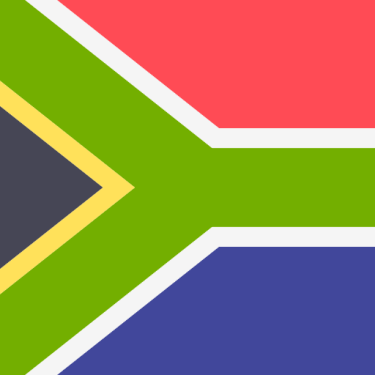
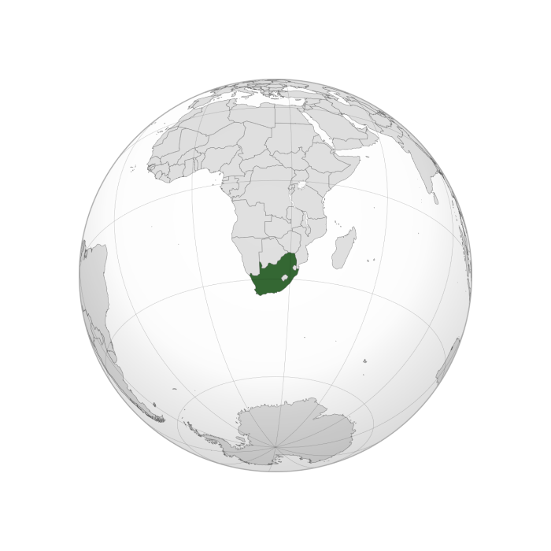
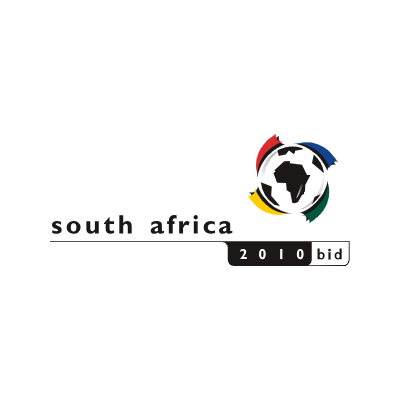

South Africa Flag
The winning bid was announced by FIFA president Sepp Blatter at a media conference on 15 May 2004 in Zürich; in the first round of voting, South Africa received 14 votes, Morocco received 10 and Egypt no votes. South Africa, which had narrowly failed to win the right to host the 2006 event, was thus awarded the right to host the tournament.

South Africa Location
Campaigning for South Africa to be granted host status, Nelson Mandela had previously spoken of the importance of football in his life, stating that while incarcerated in Robben Island prison playing football "made us feel alive and triumphant despite the situation we found ourselves in". With South Africa winning their bid, an emotional Mandela raised the FIFA World Cup Trophy.

Bid Logo
During 2006 and 2007, rumours circulated in various news sources that the 2010 World Cup could be moved to another country. Franz Beckenbauer, Horst R. Schmidt, and, reportedly, some FIFA executives expressed concern over the planning, organisation, and pace of South Africa's preparations. FIFA officials repeatedly expressed their confidence in South Africa as host, stating that a contingency plan existed only to cover natural catastrophes, as had been in place at previous FIFA World Cups.